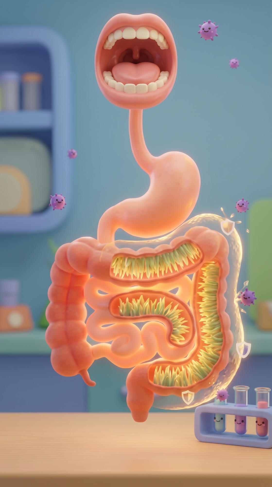
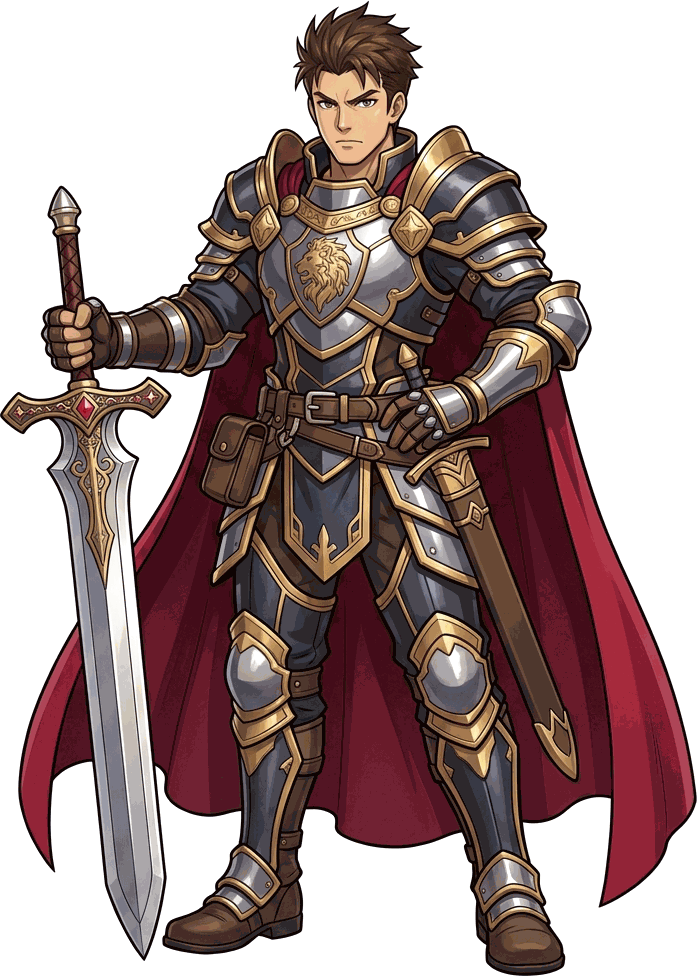
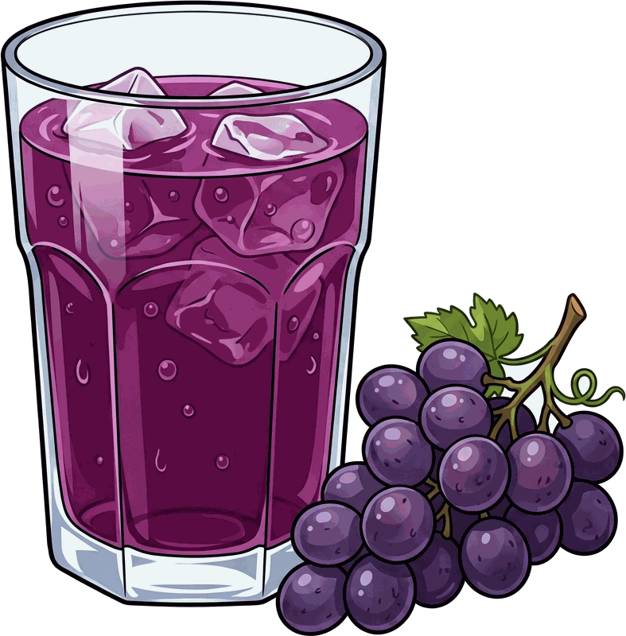
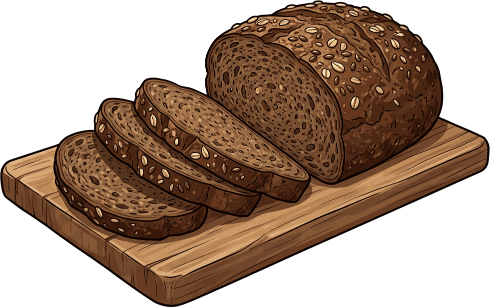
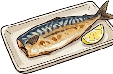
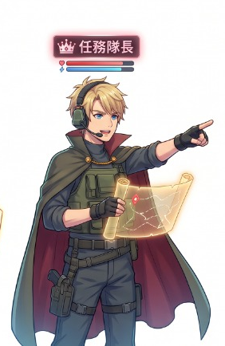

挑戰失敗
請重新通關
🔊 點擊開啟影片聲音
選項 A
1MUST評估
›
2體重流失
›
3疾病禁食
›
4風險等級
›
🏆英雄榜

點選圖片中的部位作答

護理師 林語柔
營養實習生

+0.5% 蓄力！
⚔️ 糖化檢定勇者
⚡ 6.5% 聖光斬擊 ➔
🔥 魔龍烈火吐息 ➔
💥 HIT!
🔥 黑炎魔龍
0.0% (0票)
白米粥
0.0% (0票)

葡萄汁
0.0% (0票)

裸麥麵包
0.0% (0票)
早餐玉米片
給王伯伯的食物
已選 0 項
蛋
✓
青菜
✓
珍珠奶茶
✓
飯
✓

牛奶
✓
蛋糕
✓

選項 A
❌ 容易打瞌睡
投影片單向講授：抄寫課本與投影片筆記

選項 B
✅ 正確教學設計
我的餐盤實作互動：利用食物模型動手搭配均衡餐盤

選項 A
✅ 正確食農教育
親自種植蔬菜，觀察生長過程並認識農田

選項 B
❌ 缺乏土地連結
教導蔬菜的營養成分及零售價格

選項 A
❌ 相關不等於因果
喝含糖飲料是造成肥胖的原因

選項 B
✅ 正確科學推論
喝飲料與肥胖相關，但不具因果關係

選項 A
依據研究問題，蒐集資料與分析

選項 B
❌ 缺乏實證與同儕審查
看網路熱門文章或詢問ChatGPT

🕵️ 團隊合作 ‧ 血糖偵查小隊
🌙 深夜 2:00 ‧ 神秘低血糖警報
🔍 血糖偵探
蒐集血糖數值線索
血糖數據分析員
🧠 醫療學者
判讀生理機轉
臨床機轉專家
🛡️ 荷爾蒙勇者
找出逆調節賀爾蒙
荷爾蒙防衛隊

👑 任務隊長
整合線索、做最後決策
指揮官決策
A
區域 A
0.0% (0票)
尿液白蛋白排泄率
📍 走入此處選擇 A
B
區域 B
0.0% (0票)
血漿白蛋白濃度
📍 走入此處選擇 B
C
區域 C
0.0% (0票)
血漿菊糖清除率
📍 走入此處選擇 C
D
區域 D
0.0% (0票)
血漿肌酸酐清除率
📍 走入此處選擇 D
營養實習生
下列何者不是測量腎臟功能的常用參考指標？
👑 正確答案：【B. 血漿白蛋白濃度】
💡 解析：白蛋白由肝臟合成；腎功能常用指標為腎絲球濾過率、尿素氮與肌酸酐清除率。
A
B
C
D
▲
▼
◀
▶
護理師 林語柔
點擊對話框繼續 💬 ➔
⚔️ 決戰魔龍 ‧ 糖化血色素
糖化血色素（HbA1c）拉拉條判定出擊
🎯 判定切點出擊
設定診斷數值：
0.0
%
0%
2%
4%
6%
8%
10%
🎮 請拖曳上方拉拉條調整數值，並點選「蓄力出擊」！
📋 NCP 臨床營養評估
竹科高階主管 陳先生 ‧ 健檢抽血生化數據報告單
🩺 請勾選所有「異常數值」
受檢個案：陳先生 (48歲 男性)
工時狀況：每週 60 小時 ‧ 常態外食久坐
送檢單位：新竹科學園區 企業醫務室
| 檢驗項目 | 個案檢驗值 | 生化異常判定 |
|---|---|---|
| 空腹血漿血糖 (FPG) | 138 mg/dL | |
| 糖化血色素 (HbA1c) | 7.4 % | |
| 75g OGTT 第 2 小時血糖 | 132 mg/dL | |
| 三酸甘油脂 (TG) | 225 mg/dL | |
| 高密度脂蛋白 (HDL-C) | 45 mg/dL | |
| 低密度脂蛋白 (LDL-C) | 115 mg/dL |
💡 臨床指引：請仔細比對各項指標數值，勾選所有偏高或偏低之異常生化項目後點選送出！
🎯 請點選您的答案 (手機即時投票)：
📊 本關投票：0 票
🎯
答對人數
0 人
❌
答錯人數
0 人
👥
總作答數
0 人